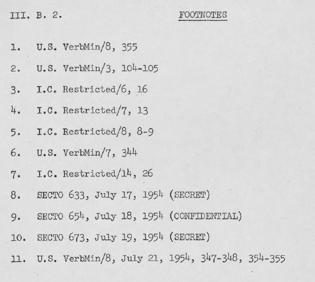

1. Sự hiện diện của Pháp không có nghĩa là Pháp có chủ quyền
Sự kiện rằng các lực lượng Liên hiệp Pháp tại Việt Nam trong thời gian hiệp định Genève về quân sự được ký kết, và họ vẫn ở đó trong lúc và sau Hội nghị, không cần được hiểu đó là bằng chứng về sự thiếu chủ quyền của Việt Nam. Lực lượng Liên minh Pháp khó có thể rời khỏi đất nước ngay lập tức mà không bỏ tất cả Việt Nam cho cộng sản, mà không mời gọi việc giết hại các sĩ quan người Việt quốc gia trong Quân đội Pháp và những quan chức không tác chiến lãnh đạo quân đội [Pháp] này. Rõ ràng, chỉ có một rút lui dần dần các quân đoàn viễn chinh Pháp là hợp lý trong quan điểm về tình hình quân sự hiện hành. Chính phủ Việt Nam chấp nhận những thực tế này và công nhận sự hiện diện tiếp tục của Pháp là cần thiết. Chính phủ Pháp, khi trao trả độc lập cho Việt Nam đã đồng ý rằng quân viễn chinh [Pháp] sẽ được rút ra khỏi Việt Nam theo yêu cầu của Chính phủ Việt Nam - mặc dù không có nghi ngờ gì là Pháp muốn trì hoãn ngày đó. Thực vậy, Pháp đã nhanh chóng rút đi sau Hội Nghị Genève, dưới sự đôn đốc của Mỹ, bỏ lại cho Chính phủ Việt Nam đầy đủ các những cạm bẩy của chủ quyền trao vào tháng Sáu năm 1954. Đến giữa tháng Chín, việc chuyển giao các dịch vụ dân sự, cảnh sát, và hành chính công khác tại miền Nam Việt Nam được chính thức hoàn thành. Tháng Hai, 1955, quân đội Việt Nam đã được đặt dưới sự chỉ huy của các nhà lãnh đạo Việt Nam và Pháp chấp nhận tính ưu tiên của Mỹ trong các việc tư vấn, đào tạo và trang bị cho lực lượng vũ trang của Chính phủ Việt Nam.
2. Pháp là người thi hành của Hiệp định Genève
a. Chính phủ Việt Nam không kế thừa trách nhiệm của Pháp
Điều 27 của hiệp định đình chiến được ký bởi Pháp đã nêu lên một phần: “Các bên ký kết Hiệp định hiện tại và những người kế thừa của họ, trong chức năng của mình, có trách nhiệm bảo đảm và chấp hành và thực thi các điều khoản và các quy định của chúng... " điều khoản đó dường như buộc Nhà nước Việt Nam trong trường hợp Pháp bãi bỏ trách nhiệm của mình - nhưng ngay cả khi hiểu một cách như thế, nghĩa vụ trong hiện tại chỉ áp dụng cho “những thỏa thuận [quân sự], " và không dính gì đến những điều khoản chính trị ghi trong Tuyên Bố Cuối Cùng không được ký kết. Cũng có thể giải thích chữ "kế thừa" như là một chất kết dính cho cuộc diễn hành của chính phủ Pháp như theo Mendes-France [muốn]. Trong mọi trường hợp, Nhà nước Việt Nam rõ ràng đã phủ nhận trách nhiệm cho tất cả các thỏa thuận ký kết bởi nước Pháp tại Genève, mặc dù họ cam kết không can thiệp vào lệnh ngừng bắn. 1/ Chính phủ Việt Nam đã sớm tuyên bố không chấp nhận, đã lặp đi lặp lại nhiều lần và rất cụ thể. Hơn nữa, các lần tuyên bố đã gồm các cảnh báo rằng việc phân vùng và các cuộc bầu cử theo như Hội nghị Genèveđịnh sẽ dẫn đến những bạo lực mới. Trích dẫn về các tuyên bố này như sau:
Những tuyên bố của chính phủ Việt Nam trong Hội Nghị Genève
Ngày
Về việc phân vùng
Về vấn đề bầu cử
2
12-05-54
Hội nghị Genève "không được đưa đến việc phân vùng, hoặc là trực tiếp hay gián tiếp, cuối cùng hoặc tạm thời, trên thực tế hay hợp pháp, lãnh thổ quốc gia."
Cuộc bầu cử có thể được tổ chức khi Hội đồng Bảo An [Liên Hợp Quốc] quyết định rằng một Nhà nước đã được thành lập trên toàn bộ lãnh thổ, và rằng các điều kiện tự do [bầu cử] đã có được... "
3
25-05-54
Nhà nước Việt Nam sẽ không đồng ý với bất kỳ kế hoạch nào đưa đến kết quả là phân vùng Việt Nam. Phân vùng là sẽ gây ra những "nguy hiểm nghiêm trọng. "
4
27-05-54
"... Đoàn đại biểu Việt Nam mong muốn cảnh báo Hội nghị chống lại các biện pháp đang bàn cải để chia vùng lãnh thổ quốc gia. Nếu một bộ phận của Việt Nam đã bị cắt ra, kết quả chỉ là một tạm ngưng trước khi một cuộc chiến tranh mới [xảy ra]. Không có ví dụ nào về một đất nước bị chia cắt mà không cố gắng để khôi phục lại sự thống nhất và biên giới lịch sử của mình, phân vùng do đó sẽ có nghĩa là sớm hay muộn - có thể sớm hơn. một sự tái xuất của chiến tranh "
5
29-05-54
"Chúng tôi tin rằng có những nguyên tắc nhất định hướng dẫn chúng ta. Trong số những nguyên tắc này là chính trị và toàn vẹn lãnh thổ của nước Việt Nam. Khi có sự đồng ý rằng đại diện của Việt Nam nên tham dự hội nghị này, lúc ấy rõ ràng rằng mọi người đã không thể bỏ qua hậu quả của việc tham dự này. Không thể chấp nhận để cho một người được tự cho mình có cái quyền cắt xén của đất nước của mình... Không có người Việt Nam yêu nước nào có thể chấp nhận việc phân vùng. "
6
10-06-54
"Đoàn đại biểu Nhà nước Việt Nam... đã có vinh dự để đề xuất... cuộc bầu cử... trong khi đoàn đại biểu Việt Minh đã đề xuất rằng [bầu cử] không có giám sát quốc tế, việc đó, trong hoàn cảnh hiện tại, có nghĩa là cuộc bầu cử không có thể là trung thực và đúng sự thật, đoàn đại biểu Nhà nước Việt Nam đã đề xuất rằng các cuộc bầu cử sẽ diễn ra dưới sự giám sát quốc tế. "
7
16-06-54
Chính phủ Việt Nam, nếu đề nghị của chúng tôi ngày 12 tháng năm, đã chủ động đề xuất các cuộc bầu cử... [thì] các cuộc bầu cử này phải được tự do, chân thành, và được giám sát. Việc kiểm soát tốt nhất sẽ được thực hiện bởi Liên Hiệp Quốc "
8
17-07-54
"Việc phân vùng trên thực tế... không đếm xỉa gì đến ý chí một long đoàn kết quốc gia của người dân Việt Nam... Việt Nam sẽ chọn... [chấp nhận] Liên Hiệp Quốc kiểm soát tạm thời một nước Việt Nam thực sự thống nhất và độc lập để giữ Việt Nam khỏi bị chia cắt và bị kết án phải chịu cảnh nô lệ. "
"Việc tập trung... củng cố mối đe dọa không cho người dân được tự do thể hiện ý muốn của mình. Do đó một hiệp định ngừng bắn chẳng những không dẫn đến một nền hòa bình bền vững, kể từ khi nó đã bỏ qua ý chí đoàn kết dân tộc, kích động người dân “thống nhất” đất nước, nhưng bằng cách củng cố các lực lượng vũ trang hiện nay đang phải đối mặt với nhau, nó đã vi phạm trước tiên sự tự do [lựa chọn] trong các cuộc bầu cử tương lai... các hiệp định ngừng bắn... chẳng những không đưa tới hòa bình, mà còn làm cho hòa bình không thể xảy ra và bấp bênh. "
9
18-07-54
"Để tránh bất kỳ sự hiểu lầm [Trần Văn Đỗ] đoàn Việt Nam kiên quyết không dính kết gì với bất kỳ thảo luận nào về việc này [Tuyên bố cuối cùng]... Việt Nam không đồng ý với các điều kiện đã được đưa ra để chấm dứt chiến sự... Đoàn Việt Nam chỉ có thể phản đối ý tưởng của việc phân vùng... đoàn Việt Nam đã thẳng thừng bác bỏ cả hai dự thảo trình hội nghị... đoàn Việt Nam không thể chấp nhận [bất kỳ] tuyên bố hay thỏa thuận nào khi mà Việt Nam, [được] mời tham dự hội nghị như [một] nhà nước đang hiện hữu, thậm chí [ý tưởng ấy] không [được] đề cập đến. "
10
19-07-54
" tất cả dự thảo của Pháp, Liên Xô và Việt Minh đều thừa nhận các nguyên tắc của việc phân chia Việt Nam thành hai vùng, tất cả miền Bắc Việt Nam giao cho Việt Minh. Mặc dù phân vùng này chỉ là tạm thời trong lý thuyết, nó sẽ không (nhắc lại chữ không) thất bại để đem đến cho Việt Nam những tác hại tương tự như ở Đức, Áo, và Hàn Quốc. Nó sẽ không mang lại hòa bình đang tìm kiếm, nó làm thương tổn sâu sắc tình cảm quốc gia của người dân Việt Nam, nó sẽ gây ra rắc rối trong cả nước, những rắc rối sẽ không khỏi đe dọa hòa bình mà [chúng ta] phải trả giá đắt để có. "
"Đoàn đại biểu Việt Nam do đó đề nghị:
Đề xuất này được thực hiện theo các hướng dẫn chính thức của Vua Bảo Đại, và Tổng Thống Ngô Đình Diệm, cho thấy đó lãnh đạo của Việt Nam một lần nữa đã đặt độc lập và thống nhất đất nước của mình lên trên bất kỳ cân nhắc nào, và rằng chính phủ quốc gia Việt Nam muốn Liên Hợp Quốc kiểm soát tạm thời một Việt Nam thực sự độc lập và toàn vẹn lãnh thổ để duy trì quyền lực trong một đất nước bị chia cắt và bi kết án làm nô lệ. "
11
21-07-54
"Ông Trần Văn Đỗ (nhà nước Việt Nam) (phiên dịch):
Thưa ông Chủ tịch, đoàn đại biểu Nhà nước Việt Nam khi trình đề nghị của mình, đã nhìn thấy một hiệp ước đình chiến không kèm theo việc phân vùng Việt Nam, dù thậm chí chỉ là tạm thời, thông qua việc giải trừ quân bị tất cả các lực lượng tham chiến sau khi họ tập trung vào những vùng tập trung nhỏ càng giới hạn càng tốt và việc thành lập một kiểm soát tạm thời của Liên Hiệp Quốc trên toàn lãnh thổ, trong khi trật tự và hòa bình đã được lập lại, sẽ cho phép người dân Việt Nam quyết định số phận của mình thông qua một bầu cử tự do.
Đoàn đại biểu Nhà nước Việt Nam phản đối sự việc rằng đề xuất của họ đã bị từ chối mà không cần xem xét, mà đề xuất đó là đề xuất duy nhất phản ánh nguyện vọng của nhân dân Việt Nam. Việc khẩn trương phi quân sự hóa và trung lập hóa cộng đồng Công giáo, các giáo phận của vùng đồng bằng VNDCCH-Nam ít nhất phải được Hội nghị này chấp nhận.
“[Chúng tôi] long trọng phản đối chống lại các kết luận vội vàng của Hiệp định đình chiến chỉ do bộ chỉ huy cao cấp Pháp và Việt Minh soạn thảo, trong khi Bộ Tư lệnh Pháp chỉ thi hành việc chỉ huy quân đội Việt Nam thông qua ủy quyền được đưa ra bởi người đứng đầu Nhà nước Việt Nam, trong khi đó đặc biệt là có nhiều quy định của Hiệp định mang tính chất gâyphương hại nghiêm trọng đến tương lai chính trị của Việt Nam.
“[Chúng tôi] long trọng phản đối chống lại thêm một thực tế nữa là Hiệp định đình chiến này giao bỏ cho Việt Minh các vùng lãnh thổ mà một số vùng vẫn đang được quân đội Việt Nam trú đóng và hơn nữa, đó là những vùng căn bản để giúp Việt Nam chống lại sự bành trướng nhiều hơn nữa của Cộng sản, và hậu quả thực tế là đã tước khỏi nhà nước Việt Nam quyền tự tổ chức phòng thủ cho chính mình khác hơn là cách phải duy trì quân đội nước ngoài trên lãnh thổ của mình.
“[Chúng tôi] cũng long trọng phản đối chống lại sự việc rằng Bộ Tư lệnh Pháp Tối Cao đã tự hài lòng lấy những quyền mà không có một thỏa thuận sơ bộ nào với Phái đoàn của nhà nước của Việt Nam để định ngày của cuộc bầu cử trong tương lai, trong khi chúng ta hiển nhiên đang đối phó ở đây với một điều khoản rõ ràng là manh tính chất chính. Do đó, chính phủ của Việt Nam yêu cầu Hội Nghị ghi nhận rằng Việt Nam long trọng phản đối chống lại cách thức mà [Hiệp Ước] đình chiến đã được ký kết và chống lại các điều kiện đình chiến này vì đã không đếm xỉa gì đến nguyện vọng sâu xa của nhân dân Việt Nam.
"Chính phủ Việt Nam mong muốn Hội nghị ghi nhận về sự việc là họ bảo lưu được hoàn toàn tự do hành động để bảo vệ quyền lợi thiêng liêng của người Việt Nam để thống nhất lãnh thổ, độc lập dân tộc, và tự do.
"... Liên quan đến Tuyên bố cuối cùng của Hội nghị, Đoàn Việt Nam muốn yêu cầu Hội nghị sát nhập Tuyên bố này sau khi Điều 11, các văn bản sau đây:
"Hội nghị lưu ý về Tuyên bố của Chính phủ Việt Nam cam kết:
‘để thực hiện và hỗ trợ mọi nỗ lực nhằm thiết lập lại một nền hòa bình thực sự và lâu dài tại Việt Nam;
‘không sử dụng vũ lực để chống lại các qui trình thực hiện ngừng bắn có hiệu lực, mặc dù những phản đối và những bảo lưu mà Việt Nam đã đưa ra, đặc biệt là trong Tuyên bố cuối cùng của nó. "
Đã xác định rằng những tuyên bố về chính sách của Nhà nước Việt Nam là họ nói không với Hiệp định Genève, mặc dù Việt Nam có nghĩa vụ, theo Hiệp ước Độc lập (ngày 04 tháng sáu năm 1954) phải chấp nhận hành động của Pháp đại diện cho mình tại Genève.Tuy nhiên, khi tham khảo các tài liệu trong Hiệp ước Độc lập của Việt Nam về việc thực hiện các hiệp ước và công ước ký kết bởi Pháp trong quá khứ; không có điều nào cho phép Pháp nhân danh Việt Nam ký kết các thỏa thuận có tình cách ràng buộc đối với Việt Nam sau ngày 04 tháng 6. Việc thông qua Điều 27 của Hiệp định Genève giao cho Pháp trách nhiệm việc bảo đảm phương Tây tuân thủ với các điều khoản của thỏa thuận, xa như là một phần phía Nam của Việt Nam đã được quan tâm.Thật vậy, trong suốt hội nghị, Pháp là một trong hai nhân vật chính chủ yếu, đã đúc kết vị trí cuối cùng được chấp nhận bởi phương Tây, và đã ký thỏa thuận ngừng bắn (tuyên bố cuối cùng đã không được ký, một tuyên bố miệng của sự đồng ý được thay thế. Sau đó việc trở nên rõ ràng là Mỹ sẽ không ký. Mỹ cũng tự tiết chế mình không tham gia vào việc đồng ý bằng miệng) lực lượng Pháp và các yếu tố chính trị đã có mặt tại miền Nam Việt Nam và không cần thiết, theo các hiệp định, phải bị giải tán. Trong thời điểm này, không một quốc gia tham dự Hội Nghị Genève đã tính tới việc Pháp sẽ nhanh chóng rút quân đội của họ ra khỏi Việt Nam.
b. Vị trí của Chính phủ Việt Nam là bất thường
Việc thường được công nhận tại Genève rằng vị trí của Chính phủ Việt Nam là, ngay lúc tốt nhất, mâu thuẫn. Chính phủ Việt Nam mong muốn khẳng định vị thế quốc tế của mình bằng cách đòi hỏi những nhượng bộ mà các quốc gia khác coi là không thể. Chính phủ Việt Nam đã đưa ra những lời chỉ trích Pháp nghiêm trọng, trong những chuyện trò, lại đồng thời thừa nhận là nhờ Pháp mà họ còn tồn tại trước các áp lực quân sự và chính trị của Việt Minh – [những áp lực] mà ngay chính cả Pháp chỉ có thể khít khao chống đỡ. Những phản kháng của Chính phủ Việt Nam không được ủng hộ được các quốc gia khác thong cảm như là một quốc gia nhỏ bé đang đấu tranh cho sự sống còn [của mình].
Phân vùng, tập trung quân, và các điều kiện ngừng bắn nhằm mục đích dẫn đến một giải pháp chính trị cuối cùng tại Genève, tất cả đã áp đặt lên Sài Gòn. Trong khi có một sự thật rằng những giải pháp do Chính phủ Việt Nam đưa ra là không thực tế và không thể chấp nhận được về mức độ lãnh thổ và dân số dành cho Việt Minh kiểm soát, thực tế nổi bật là Chính phủ Việt Nam, phát biểu từ một vị trí mà họ cho là độc lập, đã nhanh chóng chống lại mọi đề nghị không chứa đựng các khái niệm về sự thống nhất quốc gia và quyền tự quyết. Vai trò hạn chế của Chính phủ Việt Nam tham gia với tư cách độc lập tại Hội nghị [Genève] xuất phát từ quyết tâm của Pháp nhằm kết luận giải quyết phù hợp với lợi ích của Pháp. Pháp phát huy hết sức mình để thu hút nhiều ủng hộ trong Hội nghị, Chính phủ Việt Nam thì không làm như thế. Tuy vậy, Chính phủ Việt Nam đã không bị ràng buộc bởi những cam kết trước đó [do Pháp ký], chiếu theo tình trạng pháp lý của họ, họ cũng không bị ràng buộc để tuân thủ Hiệp định là thỏa thuận giữa Pháp và Việt Minh vừa xuất hiện. Điều bất thường này cuối cùng làm cho Pháp, và sự hiện diện của Pháp tại Việt Nam, trở nên quan trọng để thực hiện hiệp định Genève.
